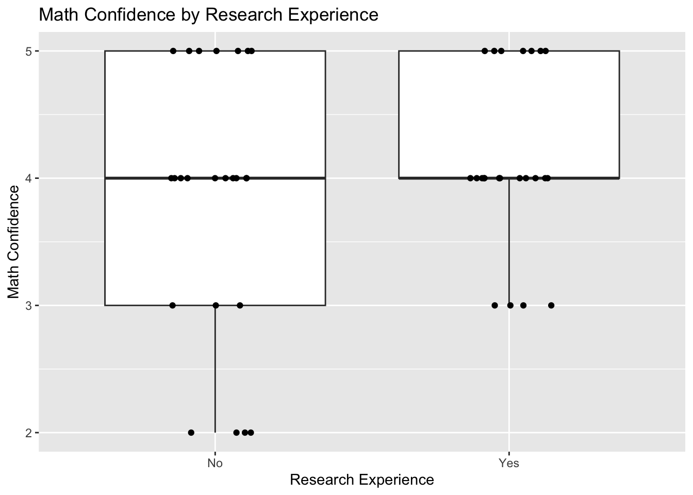
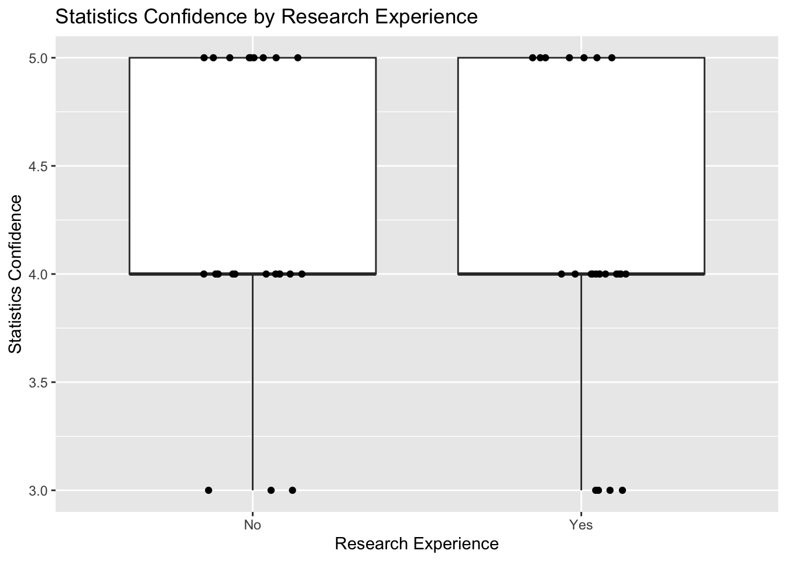
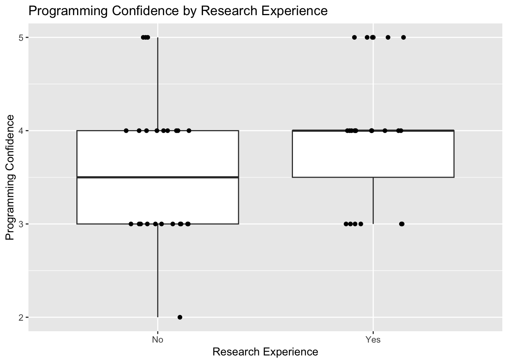
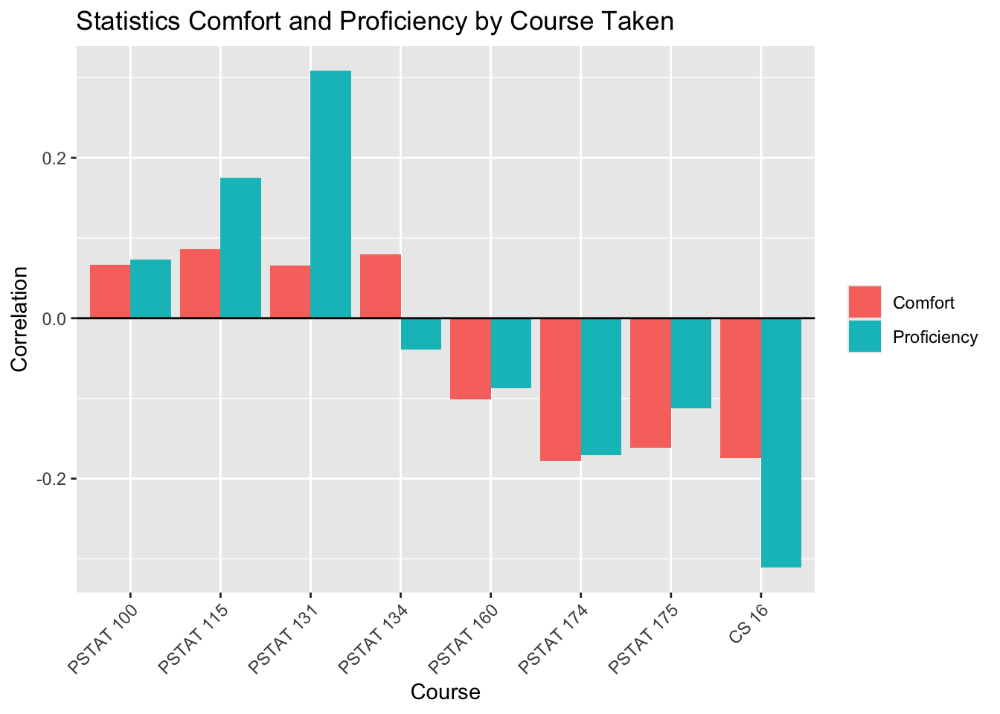
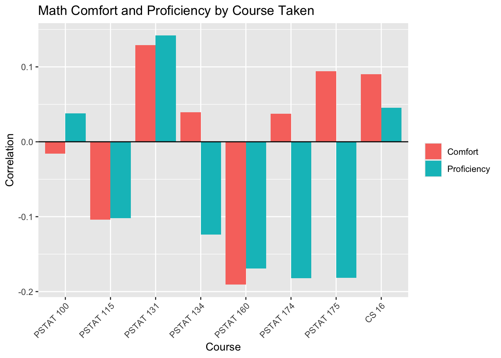
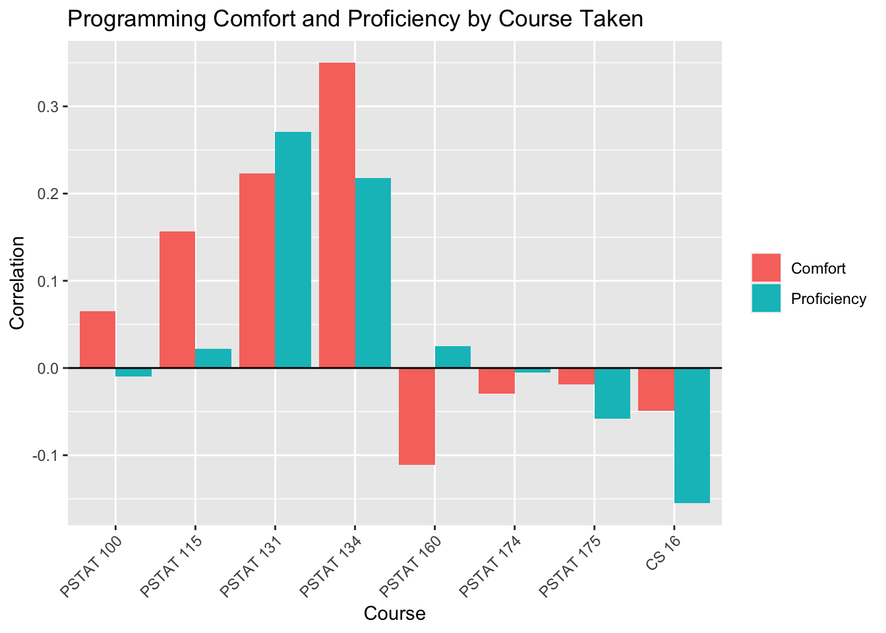

# A tibble: 3 × 2
research n
<chr> <int>
1 No 24
2 Unsure 4
3 Yes 23Analysis of class surveys
Executive summary
Our goal was to explore how proficiency and comfort levels in mathematics, statistics, and programming are associated with each other, prior research experience, and upper-division coursework. The data came from a survey taken by students enrolled in PSTAT 197A in Fall 2026. We focused on three questions: first, whether prior research experience was associated with students’ confidence in mathematics, statistics, and programming; second, whether self-assessed proficiency and comfort were related within each of those subjects; and third, whether taking specific upper-division courses was associated with students’ comfort and proficiency in mathematics, statistics, and programming. To summarize, prior research experience showed little association with math or statistics comfort, but students with research experience reported a slightly higher programming comfort. Within each subject, proficiency and comfort were moderately positively correlated, so students who rate themselves more proficient tend to feel more comfortable. Furthermore, coursework mattered the most for programming. PSTAT134 and PSTAT131 were the courses that are most associated with a higher programming comfort, and PSTAT134 was the only individually significant course in the regression models with a p-value of 0.02. Overall, math was the least connected to coursework and the theory heavy courses such as PSTAT160 and PSTAT174 leaned slightly negative for proficiency. Since our sample size is relatively small with a total of 51 students with our data being opt-in and self-reported these findings are just exploratory associations and cannot be generalized.
Data description
The data was collected from a survey given to all students enrolled in PSTAT197A fall 2026. There are a total of 55 responses with no random selection. Demographic information about the respondents is presented as an aggregate summary.
Information about skills, experience, and project preferences was recorded anonymously on an opt-in basis. 51 of the respondents consented to share skills and experience and 49 of the respondents consented to share project preferences.
Importantly for our analysis, the survey measured confidence and proficiency in math, statistics, and programming as self-reported ordinal variables. It also measured what upper-division courses were taken as a list of options and whether the student had past research experience as a categorical variable.
Questions we will be exploring:
- Question 1: Is prior research experience associated with students’ confidence in math, statistics, and programming?
- Question 2: is proficiency and comfortability in programming, math, statistics correlated
- Question 3: Is taking specific upper-division courses associated with students’ self-assessed comfort and proficiency in math, statistics, and programming?
Question 1
The first question was whether or not prior research experience is associated with 197A students’ confidence in math, statistics and programming. To get started with this, we first looked at how people answered the survey question.
Looking at the results, only 4 people answered unsure. Given that so few people answered unsure and that they could have chosen this response for a variety of reasons, we decided to ignore these responses for the analysis. This leaves us with 47 responses.
After doing this, we were able to analyze how research experience was associated with each of the 3 subjects. Here are our findings.
Math
background$research: No
Min. 1st Qu. Median Mean 3rd Qu. Max.
2.000 3.000 4.000 3.833 5.000 5.000
------------------------------------------------------------
background$research: Yes
Min. 1st Qu. Median Mean 3rd Qu. Max.
3.00 4.00 4.00 4.13 5.00 5.00 
Looking at the basic summary statistics and boxplots, it doesn’t look like research experience has an effect on math confidence. To confirm this, we calculated the effect size:
# A tibble: 1 × 7
.y. group1 group2 effsize n1 n2 magnitude
* <chr> <chr> <chr> <dbl> <int> <int> <ord>
1 math.comf No Yes 0.112 24 23 small While there is a slight tilt toward research-experienced students, math confidence is largely distributed evenly across both halves of the class regardless of whether they’ve done research before.
Statistics
background$research: No
Min. 1st Qu. Median Mean 3rd Qu. Max.
3.00 4.00 4.00 4.25 5.00 5.00
------------------------------------------------------------
background$research: Yes
Min. 1st Qu. Median Mean 3rd Qu. Max.
3.00 4.00 4.00 4.13 5.00 5.00 
Looking at the basic summary statistics and boxplots, it also doesn’t look like research experience has an effect on statistics confidence. To confirm this, we calculated the effect size:
# A tibble: 1 × 7
.y. group1 group2 effsize n1 n2 magnitude
* <chr> <chr> <chr> <dbl> <int> <int> <ord>
1 stat.comf No Yes 0.0872 24 23 small Prior research experience has virtually no bearing on how confident 197A students feel about statistics. Both groups report very comparable levels of self-assessed statistical ability, which makes sense given they are all enrolled in an upper-level PSTAT course.
Programming
background$research: No
Min. 1st Qu. Median Mean 3rd Qu. Max.
2.000 3.000 3.500 3.583 4.000 5.000
------------------------------------------------------------
background$research: Yes
Min. 1st Qu. Median Mean 3rd Qu. Max.
3.000 3.500 4.000 3.957 4.000 5.000 
For programming, the results are a little more interesting. The median is slightly higher for the students with research experience. To confirm this, we calculated the effect size:
# A tibble: 1 × 7
.y. group1 group2 effsize n1 n2 magnitude
* <chr> <chr> <chr> <dbl> <int> <int> <ord>
1 prog.comf No Yes 0.246 24 23 small The effect size is more than twice as large as the one for math. The magnitude is still small, but students with prior research experience report a noticeably higher rank in programming confidence compared to their peers without research experience. This makes sense, as past research experience likely had those students work with code.
Question 2
The second question was whether students’ self-assessed proficiency is correlated with their comfort level in math, statistics, and programming. Following proficiency-vs-comfortability.Rmd, we compared the mean and median comfort scores and the number of students at each proficiency level. We then calculated the correlation within each subject.
All 51 students who shared background information answered both questions in each subject, so no responses were removed. Proficiency was recorded as beginner (beg), intermediate (int), or advanced (adv) relative to a typical UCSB undergraduate; comfort was recorded on a 1-5 scale.
We used Spearman’s rank correlation because both measures are ordinal. We ordered proficiency from beginner to advanced so that higher ranks represent greater proficiency. A positive correlation means that students who rate themselves more proficient tend to report greater comfort. Here are our findings.
Math
# A tibble: 2 × 4
math.prof mean median count
<fct> <dbl> <dbl> <int>
1 int 3.6 4 30
2 adv 4.43 5 21
Looking at the summary statistics and bar plot, students who rated themselves advanced reported greater average math comfort. The 30 intermediate students had a mean comfort score of 3.60 and a median of 4, compared with a mean of 4.43 and a median of 5 for the 21 advanced students. This is a difference of about 0.83 points in average comfort. No students rated themselves beginners in math.
To measure this pattern, we calculated the rank correlation:
[1] 0.5094326The correlation is moderately positive (rho = 0.509). Higher self-assessed math proficiency generally goes along with greater comfort, but the relationship is not perfect: proficiency and comfort are related rather than interchangeable measures.
Statistics
# A tibble: 2 × 4
stat.prof mean median count
<fct> <dbl> <dbl> <int>
1 int 3.67 4 18
2 adv 4.39 4 33
Statistics shows a similar pattern. The 18 intermediate students had a mean comfort score of 3.67, compared with 4.39 for the 33 advanced students, a difference of about 0.73 points. Both groups had a median of 4. This shows why looking at both the mean and median is useful: the average comfort is higher for advanced students even though the middle score is the same. No students rated themselves beginners in statistics. To measure this pattern, we calculated the rank correlation:
[1] 0.4921745The rank correlation is moderately positive (rho = 0.492), slightly smaller than the math correlation. Students who rate themselves more proficient in statistics tend to feel more comfortable with the subject, even though the two groups share the same median comfort score.
Programming
# A tibble: 3 × 4
prog.prof mean median count
<fct> <dbl> <dbl> <int>
1 beg 3 3 3
2 int 3.5 3 32
3 adv 4.25 4 16
Programming is the only subject with responses at all three proficiency levels. Mean comfort increased from 3.00 for the 3 beginners to 3.50 for the 32 intermediate students and 4.25 for the 16 advanced students. The corresponding medians were 3, 3, and 4. The bar plot shows the same upward pattern as the original script’s grouped bar plot: average comfort rises with proficiency. To measure this pattern, we calculated the rank correlation:
[1] 0.5359967Programming has the largest observed correlation of the three subjects (rho = 0.536), although all three correlations are similar in size. Students who report greater programming proficiency generally also report greater comfort. The beginner group contains only three students, so its summary should be interpreted cautiously.
Overall, self-assessed proficiency and comfort are moderately positively correlated within all three subjects. The group summaries agree with the script’s main finding: higher proficiency levels have higher average comfort. Math and statistics have similar group means (3.60-4.43 and 3.67-4.39), while programming has a wider range of group means (3.00-4.25). These are ranges of group averages, not ranges of individual students’ comfort scores. The correlations describe associations, not evidence that one measure causes the other. Both measures are self-reported, and the small, opt-in sample from one course limits how broadly we can generalize the findings.
Question 3
The third question was whether taking specific upper-division classes is associated with 197A students’ self-assessed comfort and proficiency in math, statistics, and programming. To answer this, we first turned each student’s course list into a set of yes/no indicators for the courses we were interested in.
| Course | Students |
|---|---|
| PSTAT 100 | 28 |
| PSTAT 115 | 7 |
| PSTAT 131 | 46 |
| PSTAT 134 | 13 |
| PSTAT 160 | 34 |
| PSTAT 174 | 12 |
| PSTAT 175 | 6 |
| CS 16 | 11 |
We left out courses that almost everyone in the class has taken (PSTAT 10, 120, 122, 126, and CS 9), since there’s no variation to compare. Proficiency was recorded as beginner/intermediate/advanced, so we encoded these into the numerical values -1, 0 and 1 respectively; comfort was already on a 1-5 scale. (Note: only one student has taken CS 130, so any result for that course is really just one person)
We then calculated the correlation between taking each course and each of the six comfort/proficiency measures. Here are our findings.
Statistics

Statistics comfort barely changes with any course; every correlation is below 0.2 in size. Statistics proficiency shows a bit more: students who took PSTAT 131 rate themselves higher (r = 0.31), while students who took CS 16 rate themselves lower (r = -0.31). The more theoretical courses (PSTAT 160, 174, 175) lean slightly negative for both comfort and proficiency, which might mean those courses make students more aware of what they don’t know yet.
Math

Math is the least connected to coursework. All correlations are weak, and the only consistent pattern is that the theory-heavy courses (PSTAT 160, 174, 175) are slightly negative for math proficiency, similar to what we saw for statistics.
Programming

Programming has the clearest pattern. PSTAT 134 has the strongest correlation in the whole analysis with programming comfort (r = 0.35), and PSTAT 131 is positive for both comfort and proficiency. This makes sense, as both are coding-heavy data science courses. Interestingly, CS 16 isn’t associated with higher programming comfort or proficiency, possibly because it’s often taken early and students’ coding has moved on since.
Regression
To see whether the courses together predict comfort and proficiency, we fit a linear regression for each of the six measures using all nine course indicators as predictors.
| Outcome | R-squared | Overall p-value | Strongest course | Estimate | Course p-value |
|---|---|---|---|---|---|
| stat.comf | 0.13 | 0.623 | PSTAT 174 | -0.36 | 0.164 |
| stat.prof | 0.27 | 0.079 | PSTAT 131 | 0.47 | 0.041 |
| math.comf | 0.10 | 0.776 | PSTAT 160 | -0.43 | 0.160 |
| math.prof | 0.12 | 0.661 | PSTAT 131 | 0.32 | 0.205 |
| prog.comf | 0.22 | 0.189 | PSTAT 134 | 0.63 | 0.019 |
| prog.prof | 0.13 | 0.639 | PSTAT 131 | 0.41 | 0.152 |
None of the six models is significant overall at the 0.05 level; statistics proficiency comes closest (p = 0.09). The one course that stands out on its own is PSTAT 134 for programming comfort (p = 0.02), which matches the correlation above. With nine predictors and only 51 students, these results are exploratory: coursework seems to matter most for programming and least for math, but the effects are small and could easily change with a different class.
Conclusion
The data showed a slight bias towards students with more research experience - generally, we found that the more research experience students had the more comfortable they were among math, statistics and programming. However, we found that prior research experience did not have a strong effect on math confidence - it was distributed evenly among students with and without research experience. Additionally, there was evidence that prior research experience has “virtually” no impact on how confident 197A students feel about statistics. We also concluded that students with prior research experience reported a noticeably higher rank in programming confidence compared to their peers without research experience. Overall, based on the data collected in this question, we can conclude that prior research experience has an expectedly significant impact on comfort level among math, statistics, and programming.
For question 2, we concluded that self-assessed proficiency and comfort have a moderate positive correlation (rho = 0.509). The data showed that students who rated themselves advanced in math reported greater average math comfort; this makes sense, as the greater skill level implies more comfort. Statistics shows a similar pattern - the more advanced they were in statistics, the more comfortable they were with the subject. Students who reported greater programming proficiency generally also reported greater comfort. Thus, we are able to conclude from the data that self-assessed proficiency and comfort are moderately positively correlated within all three subjects (which matched expected results).
When assessing proficiency and comfort based on the specific classes students have taken, the results were interesting. Classes such as PSTAT 100, 115, 131, and 134 showed a moderately positive correlation with both statistics proficiency and comfort (PSTAT 134 showed a negative correlation with statistics proficiency). On the other hand, classes like PSTAT 160, 174, and 175, as well as CS 16, show the opposite trend with negative correlation values for statistics proficiency and comfort. This result is a little unexpected, as classes like PSTAT 160 and 174 are more advanced and theoretical statistics courses. For math proficiency, the only two classes that showed a positive correlation were PSTAT 131 and PSTAT 100. All other classes showed a fairly strong negative correlation. For math comfort, however, all classes except PSTAT 100, 115, and 160 showed a negative correlation. For programming proficiency and comfort, PSTAT 131 and 134 showed strong positive correlations, while other classes showed smaller correlations or slightly negative correlations. This pattern falls more in line with what would be expected from the sample since PSTAT 131 and 134 are statistics classes that are more programming-focused. But overall, classes like PSTAT 131 and 134 generally showed a positive correlation to both proficiency and comfort regardless of the area, while classes like 160, 174, and 175, as well as CS 16, often show negative correlation values for the different subjects. However, after assessing each class and its effects on proficiency and comfort through several linear regression models, the results showed that these effects are not particularly significant.
This is sort of a general trend within the sample as a whole. Unfortunately due to the nature of this survey being quite small and not particularly random, a lot of our findings are more generalizations of trends we found within the data. For future projects seeking to answer such questions using a larger data set is recommended.